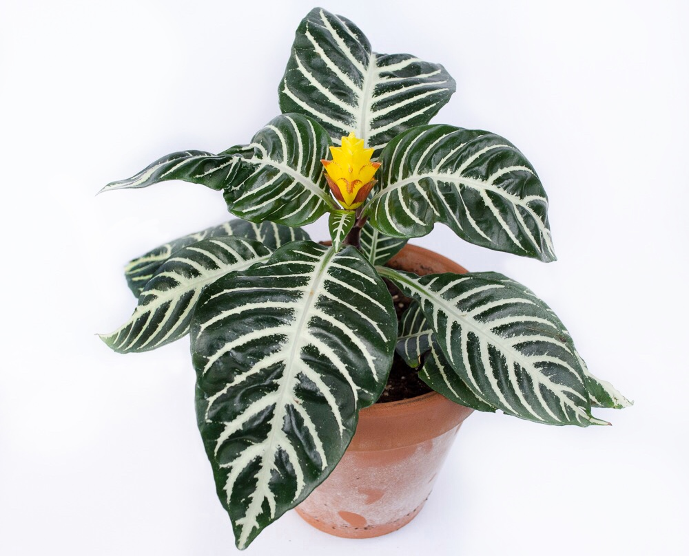

- Nombre científico: Epipremnum aureum
- Familia: Aráceas
- Cuidados: Suelto y fértil. Sustrato de resaca de río, turba y tierra negra en partes iguales.
- Descripción:Planta trepadora o rastrera con raíces adventicias y tallo herbáceo. Cultivada por su follaje.

- Nombre científico: Impatiens walleriana
- Familia: Balsaminacea
- Cuidados: Estas plantas se utilizan mucho en macizos florales situados bajo sombra ligera formando un espectacular efecto de masa hasta bien entrado el otoño si éste no es muy frío.
- Descripción: Es una popular planta de flor que, aun siendo de exterior, se utiliza en el interior de las casas.
- Nombre científico: Anthurium scherzerianum.
- Familia: Araceae
- Cuidados: Buena luz, pero sin rayos directos del sol porque le produciría quemaduras.
- Descripción: Anthurium andraeanum es una especie de angiosperma de la familia Araceae que es nativa de Colombia y Ecuador.

- Nombre científico: Aphelandra squarrosa
- Familia: Acanthaceae
- Cuidados: La Afelandra necesita una atmósfera húmeda, por lo que si la pones cerca del radiador tendrás que pulverizar sus hojas, o bien, dejarla sobre un cuenco con piedras mojadas.
- Descripción: Afelandra no es fácil de cultivar, pero merece la pena.
- Nombre científico: Begonia elatior.
- Familia:Begoniaceae
- Cuidados: Mantener el substrato siempre húmedo, no encharcado. Su mayor problema es por pudrición de los tallos al pasarse con el riego
- Descripción:El género Begonia comprende alrededor de 1500 especies, de las que alrededor de 150, además de casi 10 000 variedades e híbridos,
- Nombre científico:Gazania splendens.
- Familia: Asteraceae
- Cuidados: Suelo bien drenado. Riego regular y exposición al sol parcial.
- Descripción: Planta perenne cultivada como anual en climas con inviernos fríos.

- Nombre científico: Zantedeschia aethiopica
- Familia: Aráceas
- Cuidados:la cala es una planta semiacuática, por lo que puede ser cultivada en maceta, manteniéndola parcialmente sumergida en agua.
- Descripción: - Planta vivaz que vegeta a expensas de un tallo carnoso subterráneo que rebrota cada año.
- Nombre científico: Camellia japonica.
- Familia:Theaceae
- Cuidados: Camelia prefiere la semisombra y en climas calurosos está mejor orientada al norte.
- Descripción: Es un arbusto floral o un árbol pequeño, nativo de Japón, Corea y China .En la zona central de Chile, la ciudad de Bulnes es conocida como la ciudad de las Camelias.

- Nombre científico: Bougainvillea glabra
- Familia: Nyctaginaceae
- Cuidados: Puede crecer sin problemas en maceteros y en jardineras, pero son plantas de raíces sensibles, intolerantes al trasplante, sobre todo si son ejemplares que tienen varios años.
- Descripción: - Hojas elípticas de 13 cm de longitud, con la base estrechada y el ápice agudo, glabras o con pubescencia esparcida.